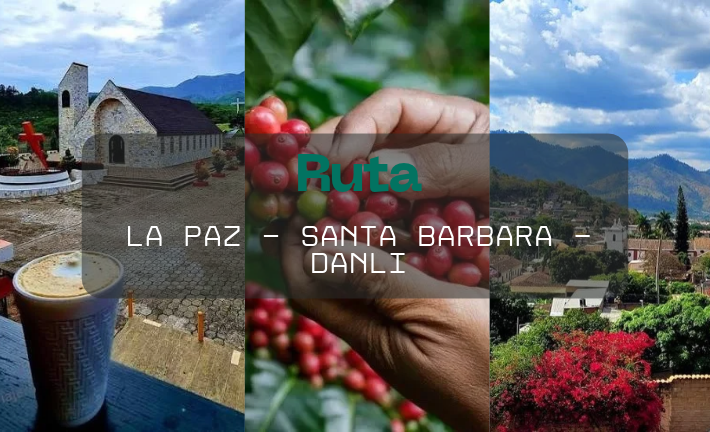
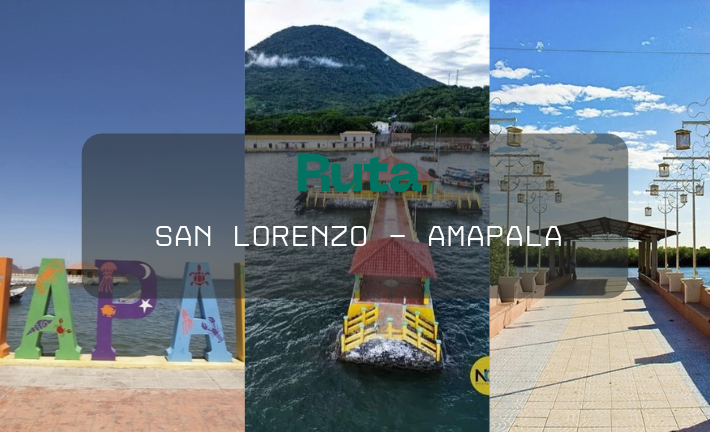
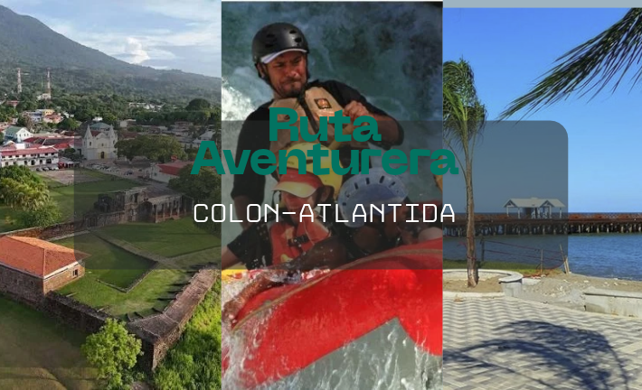
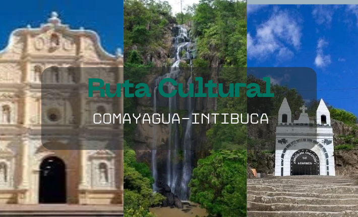

Destinos y Rutas Turisticas
Tu próxima aventura comienza aquí: Te invitamos a recorrer los destinos más mágicos de Honduras, desde imponentes parques nacionales y sitios arqueológicos milenarios hasta paradisíacas playas caribeñas y encantadores pueblos coloniales.
Ruta Cafetalera

Bienvenido a la Ruta del Café y Altas Montañas, un recorrido fascinante por los departamentos de La Paz, Santa Bárbara y Danlí (El Paraíso). Esta ruta te invita a descubrir la tierra que produce algunos de los mejores cafés del mundo, rodeada de bosques nublados, aire fresco, arquitectura tradicional y la calidez de su gente.
Marcala - Departamento de La Paz
Descripcion fisica:
Ubicado en el sur de la cordillera de Opalaca, Marcala es un municipio montañoso caracterizado por empinadas pendientes cubiertas de frondosos cafetales bajo sombra, calles adoctrinales y un clima fresco y brumoso la mayor parte del año. Es la cuna de la Denominación de Origen Café Marcala.
- Principales atractivos:
- Fincas de café de altura con tours de cata y barismo.
- La impresionante Cascada La Estanzuela y la Gruta de la Pintada.
- El centro histórico con su mercado artesanal y ferias locales de café.
Nivel de dificultad de acceso:Moderado
La carretera principal pavimentada está en buen estado, pero los desvíos hacia las cascadas y fincas altas requieren vehículos preferiblemente altos o de doble tracción en época de lluvia.
Santa Barbara - Departamento de Santa Barbara
Descripcion fisica:
Una ciudad colonial resguardada por las faldas de la imponente Montaña de Santa Bárbara (el segundo pico más alto del país). Su entorno combina una rica vegetación de bosque nublado, calles empedradas y antiguas casonas de adobe y teja.
- Principales atractivos:
- Parque Nacional Santa Bárbara (ideal para ecoturismo, cuevas y senderismo extremo).
- Tradición artesanal del tejido de junco (sombreros y canastas de fama internacional).
- Balnearios de aguas termales naturales en los alrededores del municipio.
Nivel de dificultad de acceso:Fácil a Moderado.
El acceso a la cabecera departamental es totalmente pavimentado y accesible para todo tipo de vehículo sedán.Los senderos del parque nacional exigen buena condición física.
Danli - Departamento de El Paraiso
Descripcion fisica:
Conocida como la "Ciudad de las Colinas", Danlí se asienta en un amplio valle rodeado de cerros tapizados de pinares y extensas plantaciones de tabaco y café. Posee un clima templado y un trazado urbano tradicional muy pintoresco.
- Principales atractivos:
- El histórico Cerro de Apagüiz y su monumento a la Virgen de la Candelaria con vistas panorámicas.
- Fábricas artesanales de puros de exportación y haciendas cafetaleras.
- Festividades culturales como el Festival del Maíz.
Nivel de dificultad de acceso:Fácil.
Conectada por la carretera de oriente completamente pavimentada, con excelente acceso vehicular desde la capital y la zona oriental.
| Destino / Municipio | Altitud Promedio | Distancia desde Tegucigalpa | Tiempo estimado (desde TGU) | Distancia desde San Pedro Sula | Tiempo estimado ( desde SPS) |
|---|---|---|---|---|---|
| Marcala-La Paz | 1,300 msnm | 115km | 2:30:00 | 240km | 4:00:00 |
| Santa Bárbara | 330 msnm | 200km | 3:30:00 | 90km | 1:30:00 |
| Danlí (El Paraíso) | 814 msnm | 92km | 1:45:00 | 280km | 5:00:00 |
| Ruta Cafetalera |
Ruta Costera

Bienvenido a la Ruta Costera del Golfo de Fonseca, un recorrido por los vibrantes municipios de San Lorenzo y Amapala (Isla del Tigre) en el departamento de Valle. Esta ruta combina la calidez del Pacífico hondureño, extensos bosque de manglar, la majestuosa arquitectura volcánica de una isla histórica y una gastronomía marina inolvidable.
San Lorenzo - Departamento de Valle
Descripcion fisica:
Ubicado a las orillas de la bahía de San Lorenzo en el Pacífico, es el puerto comercial y turístico más activo del sur de Honduras. Posee un clima cálido-tropical, un terreno plano costero rodeado por extensos canales de manglares y un animado malecón gastronómico.
- Principales atractivos:
- Recorridos guiados en lancha por los canales del Parque Nacional Archipiélago del Golfo de Fonseca.
- Degustación gastronómica en el Malecón de San Lorenzo (curiles, sopa marinera y pescados frescos).
- Avistamiento de aves migratorias en los ecosistemas de manglar.
Nivel de dificultad de acceso:Fácil.
Acceso totalmente pavimentado a través de la Carretera Panamericana Sur en excelente estado. Apto para cualquier tipo de vehículo y transporte público.
Amapala - Departamento de Valle
Descripcion fisica:
Una pintoresca isla volcánica dominada por el cono extinto del Cerro El Tigre. Amapala conserva un casco urbano histórico con casonas de madera del siglo XIX de cuando fue el principal puerto nacional, rodeado por hermosas playas de arena negra volcánica.
- Principales atractivos:
- Playas icónicas de arena volcánica como Playa Negra, Playa Grande y Playa Burro.
- Senderismo extremo hacia la cima del volcán extinto (Cerro El Tigre) con vistas panorámicas hacia Nicaragua y El Salvador.
- Tour histórico por las antiguas sedes consulares del centro urbano.
Nivel de dificultad de acceso:Moderado(requiere cruce marítimo).
Se llega por carretera pavimentada hasta el puerto de Coyolito, donde se aborda una lancha o ferry artesanal (15 a 20 minutos de travesía) para desembarcar en la isla.
| Destino / Municipio | Altitud Promedio | Distancia desde Tegucigalpa | Tiempo estimado (desde TGU) | Distancia desde San Pedro Sula | Tiempo estimado ( desde SPS) |
|---|---|---|---|---|---|
| San Lorenzo-Valle | 4 msnm | 100km | 1:45:00 | 350km | 5:30:00 |
| Amapala-Valle | 8 msnm | 135km | 2:45:00 | 385km | 6:30:00 |
| Ruta Costera |
Ruta Aventurera

Bienvenido a la Ruta Aventurera, un recorrido emocionante por los departamentos de Atlántida y Colón. Esta ruta está diseñada para los amantes del ecoturismo y los deportes extremos, combinando imponentes ríos de agua cristalina, selvas tropicales,parques nacionales e impresionantes actividades de aventura en la costa norte de Honduras.
La Ceiba y Cuenca del Río Cangrejal- Departamento de Atlántida
Descripcion fisica:
Ubicada entre la Cordillera Nombre de Dios y el Mar Caribe, La Ceiba es la capital del ecoturismo en Honduras. La cuenca del Río Cangrejal destaca por sus aguas cristalinas que se abren paso entre gigantescas rocas de granito en medio de la selva tropical del Parque Nacional Pico Bonito.
- Principales atractivos:
- Rafting y kayak en los rápidos clase III y IV del Río Cangrejal.
- Degustación gastronómica en el Malecón de San Lorenzo (curiles, sopa marinera y pescados frescos).
- Caminata hacia la cascada El Bejuco atravesando un puente colgante sobre el río.
Nivel de dificultad de acceso:Moderado.
La ciudad de La Ceiba tiene acceso totalmente pavimentado por la CA-13. El tramo hacia la cuenca del Río Cangrejal es de calle de tierra balastada accesible para todo vehículo, aumentando la aventura según las actividades que se realicen.
Trujillo - Departamento de Colon
Descripcion fisica:
Una histórica bahía de aguas calmas resguardada por las imponentes montañas del Parque Nacional Capiro y Calentura. Trujillo combina playas caribeñas de arena dorada, ecosistemas de manglar en la Laguna de Guaimoreto y una rica herencia colonial y garífuna.
- Principales atractivos:
- Excursiones en kayak y lancha por la biosfera y manglares de la Laguna de Guaimoreto.
- Senderismo en las laderas y senderos del Parque Nacional Capiro y Calentura.
- Recorrido por la Fortaleza de Santa Bárbara frente a la bahía y turismo de playa.
Nivel de dificultad de acceso:Fácil a Moderado.
Conectado por la carretera pavimentada de la costa norte (CA-13). Los accesos a la cima del parque nacional o senderos profundos requieren tracción 4x4 y guía local.
| Destino / Municipio | Altitud Promedio | Distancia desde Tegucigalpa | Tiempo estimado (desde TGU) | Distancia desde San Pedro Sula | Tiempo estimado ( desde SPS) |
|---|---|---|---|---|---|
| La Ceiba-Atlantida | 3 msnm | 400km | 6:30:00 | 200km | 3:30:00 |
| Trujillo-Atlantida | 10 msnm | 570km | 8:30:00 | 370km | 6:00:00 |
| Ruta Aventurera |
Ruta Cultural

Bienvenido a la Ruta Cultural, un viaje fascinante al corazón de la historia e identidad hondureña a través de los departamentos de Comayagua e Intibucá. Esta ruta te llevará a través de iglesias coloniales centenarias, valles fértiles, el clima más fresco del país y las vibrantes tradiciones del pueblo Lenca.
Comayagua- Departamento de Comayagua
Descripcion fisica:
Antigua capital colonial de Honduras situada en un amplio valle central. Su centro histórico destaca por sus plazas de adoquín,casonas españolas y templos religiosos de arquitectura barroca perfectamente preservados.
- Principales atractivos:
- Catedral Inmaculada Concepción y la vista al Reloj Árabe (uno de los relojes en funcionamiento más antiguos del mundo).
- Recorrido por el Centro Histórico, Museo de Arte Religioso y el Museo Colonial.
- Tradición de las Alfombras de Aserrín durante la Cuaresma y Semana Santa.
Nivel de dificultad de acceso:Fácil.
Ubicada sobre la autopista principal del país (CA-5), con acceso directo, completamente pavimentado y transitable para cualquier tipo de vehículo.
La Esperanza e Intibucá- Departamento de Intibucá
Descripcion fisica:
Ubicada en la altiplanicie occidental, es la zona habitada más alta y fresca de Honduras. Se compone de dos ciudades hermanas rodeadas de bosques de pino y roble, lagunas naturales y comunidades indígenas Lencas.
- Principales atractivos:
- Monumento natural y gruta religiosa La Gruta con vista panorámica de la ciudad..
- Visita a los talleres artesanales de telares Lencas y alfarería negra de El Cacao y Yamaranguila.
- Recorrido ecológico alrededor de la Laguna de Chiligatoro y mercado gastronómico de papas y champiñones locales.
Nivel de dificultad de acceso:Fácil a Moderado.
Acceso pavimentado desde la CA-5 subiendo por la carretera hacia el altiplano. El clima suele presentar neblina densa en ciertas épocas.
| Destino / Municipio | Altitud Promedio | Distancia desde Tegucigalpa | Tiempo estimado (desde TGU) | Distancia desde San Pedro Sula | Tiempo estimado ( desde SPS) |
|---|---|---|---|---|---|
| Comayagua | 550 msnm | 85km | 1:15:00 | 165km | 2:30:00 |
| La Esperanza -Intibuca | 1700 msnm | 180km | 3:00:00 | 220km | 3:30:00 |
| Ruta Cultural |